Каталог LoRA
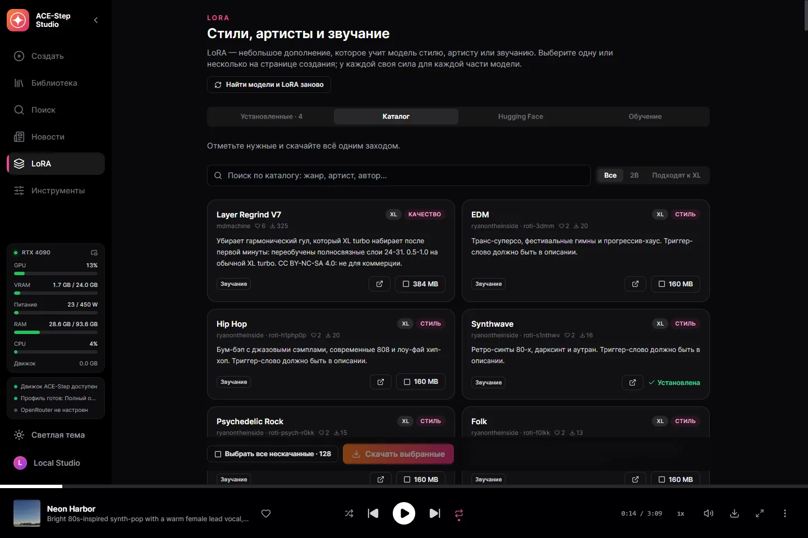
131 LoRA с Hugging Face, отобранная по лайкам и скачиваниям, с описаниями и авторами, и поиск по всему Hugging Face — каждый файл проверяется на размер модели до скачивания.
Десктопная студия для ACE-Step 1.5 — открытой модели, которая пишет и поёт целые песни.
Windows 10/11 x64 и видеокарта NVIDIA с 4 ГБ видеопамяти и больше (GTX 900 и новее). Модели скачиваются из самой студии, когда вы решите.
Сделаны на чистой установке релизной сборки, как их сохранила студия.

131 LoRA с Hugging Face, отобранная по лайкам и скачиваниям, с описаниями и авторами, и поиск по всему Hugging Face — каждый файл проверяется на размер модели до скачивания.
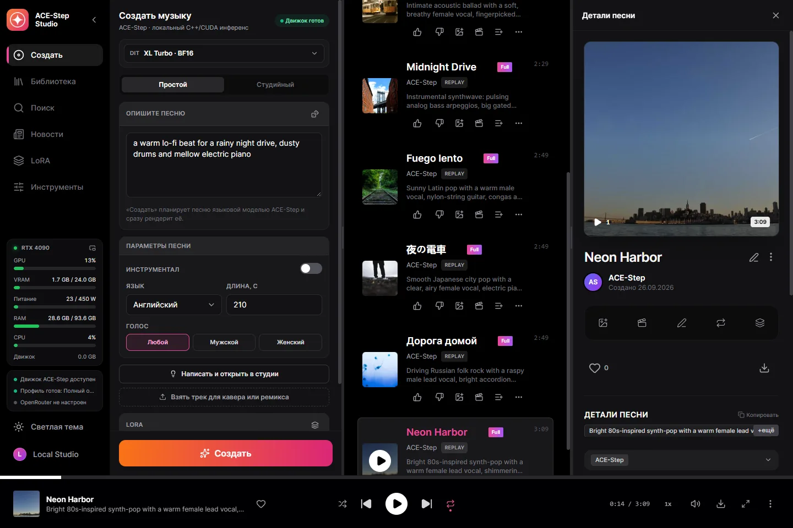
Простая форма: на входе идея, на выходе готовая песня.
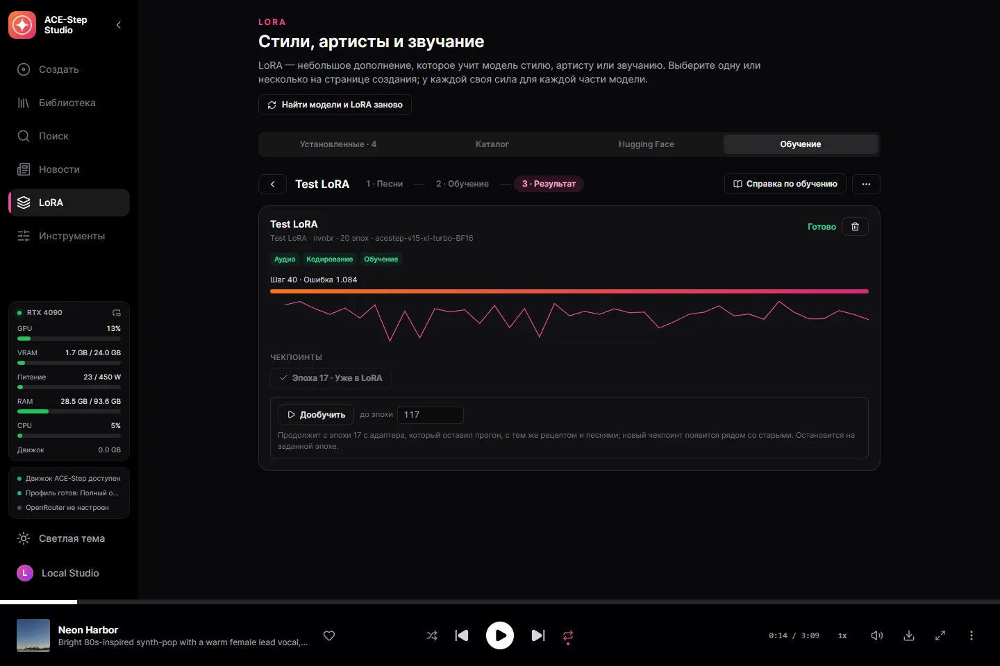
Песни одного артиста или стиля превращаются в LoRA на вашей видеокарте — тренером HOT-Step по его рецепту LoKR.
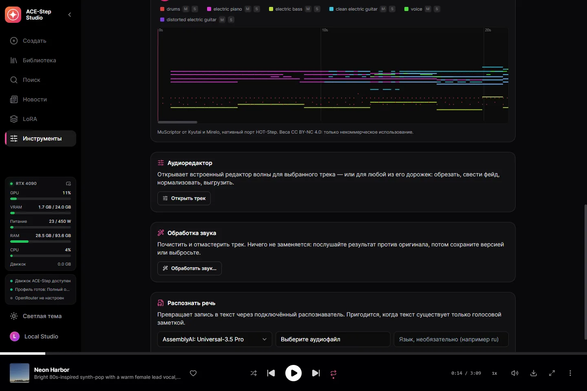
Шесть стемов HT-Demucs; любой трек в многодорожечный MIDI моделью MuScriptor, пианоролл звучит вместе с оригиналом.
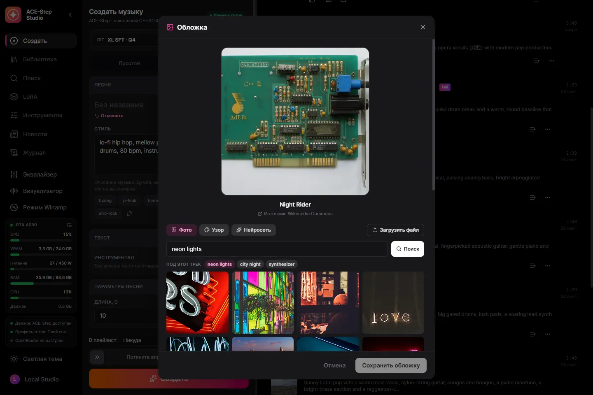
Трек без своей обложки получает бесплатное фото CC0 с Wikimedia Commons под свой стиль, узор в одном из 21 стиля или обложку, сгенерированную через OpenRouter.
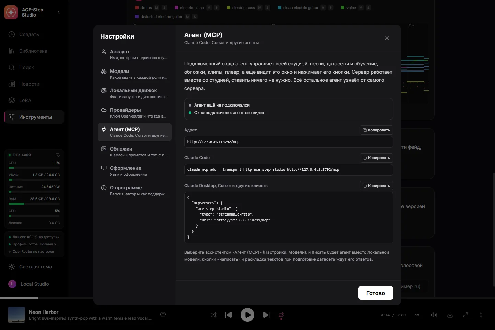
Подключите Claude Code, Claude Desktop или Cursor — агент делает всё, что умеет студия (164 инструмента), видит окно и нажимает кнопки.
Сама студия — на вашем языке.
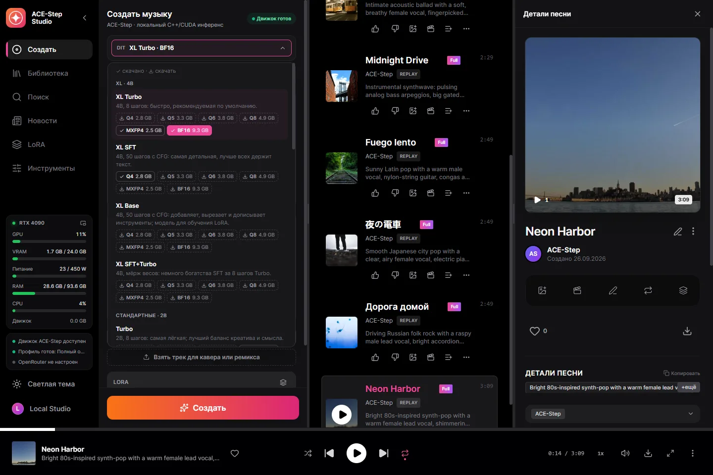
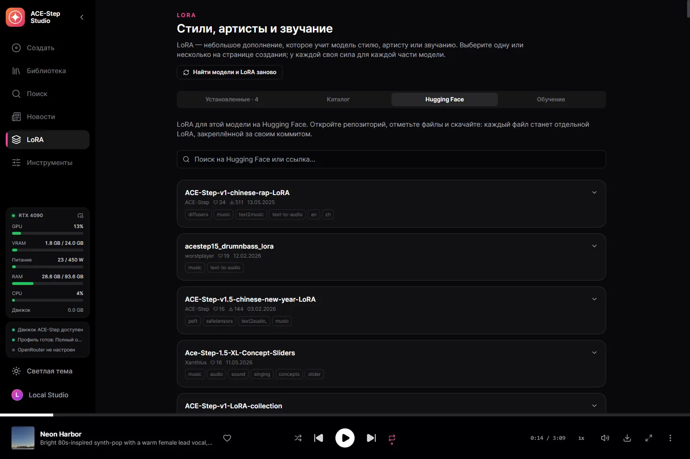
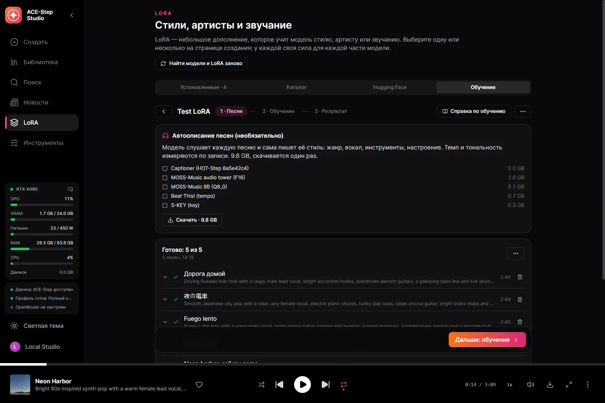
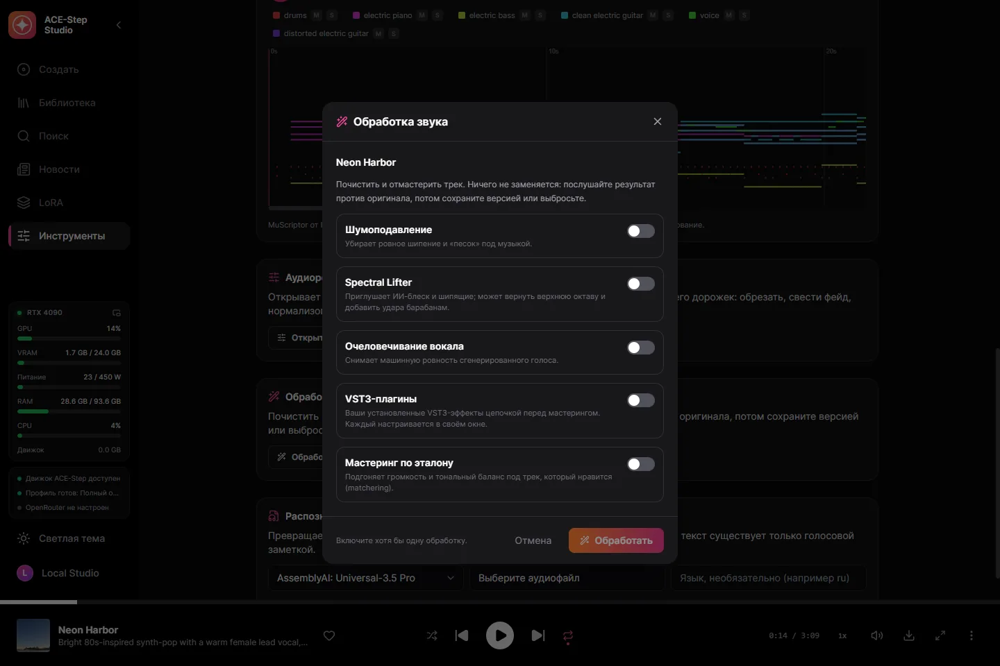
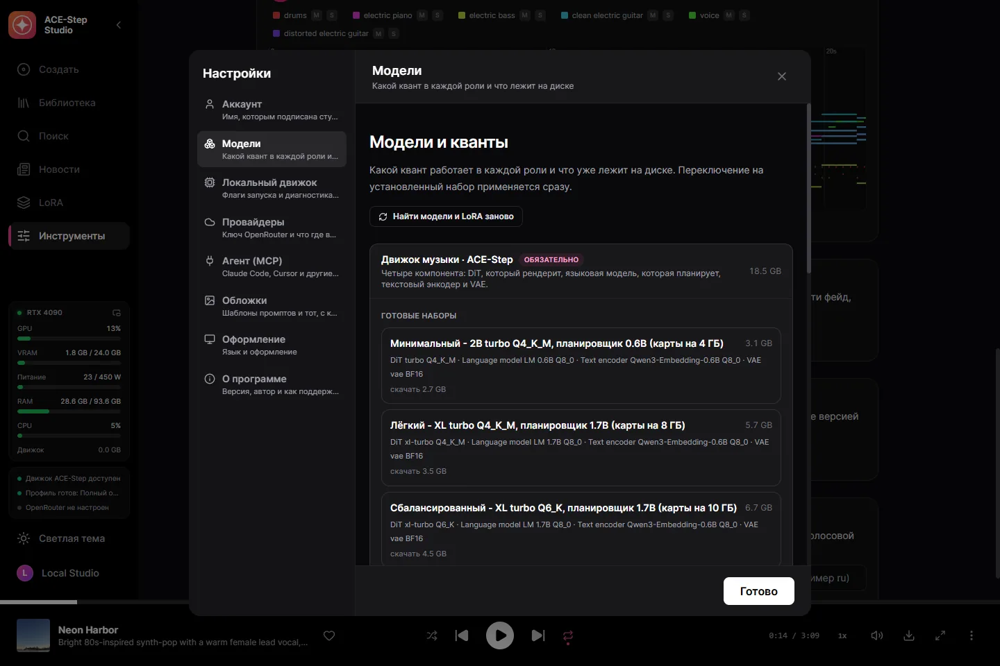
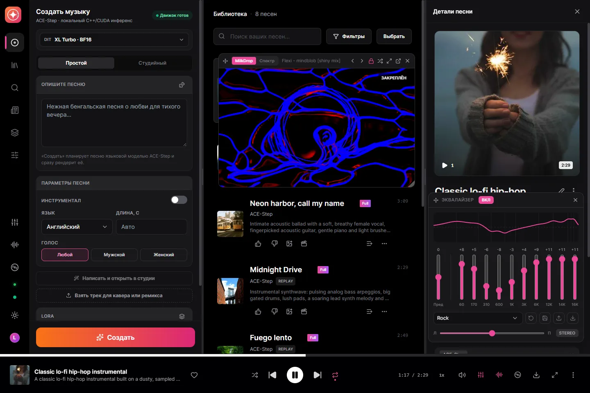

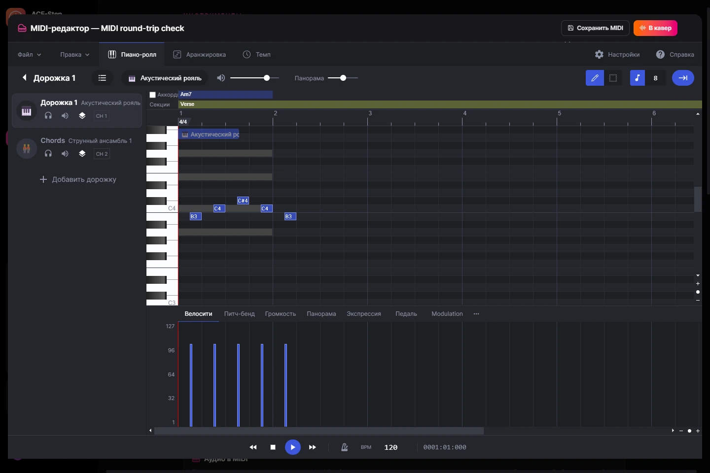
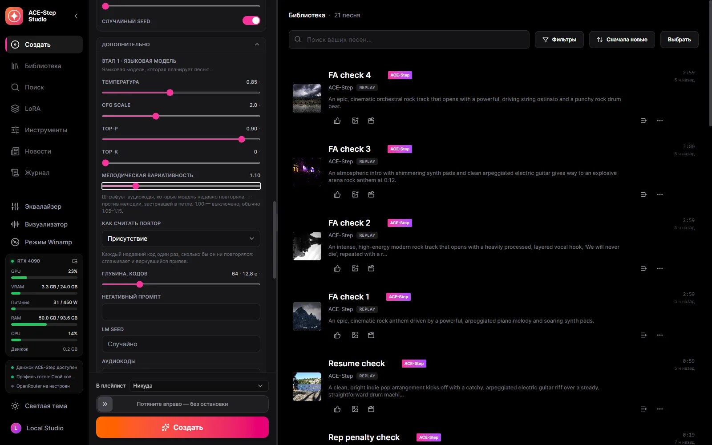
Windows 10/11 x64 и видеокарта NVIDIA с 4 ГБ видеопамяти и больше (GTX 900 и новее). Модели скачиваются из самой студии, когда вы решите.
Рабочий набор — это DiT, планировщик, текстовый энкодер и VAE, всё в GGUF.
| Ваша видеокарта | Набор | Скачать |
|---|---|---|
| 24 GB | Полный оригинал — XL turbo BF16, планировщик 4B BF16 | 18.5 GB |
| 13 GB+ | Качество — XL turbo Q8_0, планировщик 4B Q8_0 | 10.1 GB |
| 10 GB+ | Баланс — XL turbo Q6_K, планировщик 1.7B | 6.7 GB |
| 8 GB+ | Лёгкий — XL turbo Q4_K_M, планировщик 1.7B | 5.7 GB |
| 4 GB+ | Минимальный — 2B turbo Q4_K_M, планировщик 0.6B | 3.1 GB |
Студия сама предложит набор, который потянет ваша видеокарта, но скачивать решаете вы. Каждый файл сверяется по SHA-256 с закреплённой ревизией на Hugging Face, прерванная загрузка докачивается.
Да. Студия бесплатная и с открытым кодом, модели скачиваются бесплатно прямо из неё.
Ваша музыка ваша и остаётся на вашем диске.
Студия, acestep.cpp и ACE-Step 1.5 — MIT. Дообучение Regrind — CC BY-NC-SA 4.0; у каждой LoRA из каталога лицензия её автора.
Песни одного артиста или стиля превращаются в LoRA на вашей видеокарте — тренером HOT-Step по его рецепту LoKR. Каждую настройку можно поменять, чекпоинт уходит в библиотеку LoRA одним кликом.
Подключите Claude Code, Claude Desktop или Cursor — агент делает всё, что умеет студия (164 инструмента), видит окно и нажимает кнопки. Правила письма ACE-Step идут в комплекте, песни агент пишет сам.
По умолчанию всё локально. Облачный ключ добавляете вы — для той возможности, которую выберете.
| Часть | Где работает | Размер |
|---|---|---|
| Движок ACE-Step (acestep.cpp) | Ваша видеокарта: CUDA, Vulkan или процессор | в комплекте |
| Набор моделей ACE-Step | Ваша видеокарта | 3,1–18,5 ГБ |
| NVIDIA cuBLAS | Только видеокарты NVIDIA | 391 МБ, один раз |
| Тайминги караоке — Parakeet или Whisper | Ваш компьютер | по желанию |
| Разделение на стемы — HT-Demucs | Ваша видеокарта или процессор | по желанию |
| Помощник по текстам | Локальная Gemma или OpenRouter | по желанию |
| Тренер LoRA — HOT-Step ace-train | Видеокарта NVIDIA RTX | 0,1 ГБ + DiT в BF16, по желанию |
| Описание песен на слух — MOSS-Music-8B | около 12 ГБ видеопамяти | 9,8 ГБ, по желанию |
| Аудио в MIDI — MuScriptor (HOT-Step ace-midi) | NVIDIA GTX 16 / RTX 20 и новее | 0,5–5,6 ГБ, по желанию |
| Хост VST3 — HOT-Step | Ваш компьютер, отдельный процесс | в комплекте |
Сервис вшит в десктопный exe и следит за C++ движком. Готовые песни импортирует сам сервис, поэтому результат не теряется, даже если окно перезагрузили или закрыли.
React UI ─┐
├─ ACE-Step-Studio.exe (Tauri window + Rust/Axum service)
Rust axum ┘ │
└─ acestep.cpp `ace-server` (C++/GGML, GGUF)